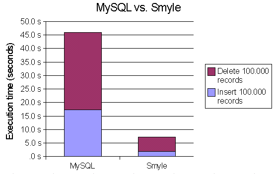

SMYLE: Benchmark results
How does Smyle perform? Is it fast enough for real-life tasks? Well, see for yourself - and keep in mind that smaller bars represent higher speed:
(MySQL: 17.3s+28.6s = 45.9s ~ 2.200 records/s; Smyle: 2.0s+5.3s = 7.3s ~ 13.700 records/s)
Test environment: Athlon 1300 MHz, 448 MB RAM, Windows 2000, JDK 1.3 HotSpot Client VM
MySQL: 3.23.22-beta; localhost via TCP/IP; JDBC driver: MM.MySQL
Smyle: 0.3 (internal prebuild)
What does the benchmark do?
It creates a table with two columns and inserts 100.000 rows. It then deletes all these rows again, one by one, through repeated queries on one of the two columns.I tried to ensure ideal conditions for both databases. The Smyle benchmark uses only two snapshots; one for the insertion phase, and one for the deletion phase. In accordance, the MySQL table is locked before each phase and unlocked afterwards (to allow for write caching).
The SQL code manually creates an index on the table (without the index, the deletion phase takes about an order of magnitude longer). Smyle automagically creates an index as soon as it notices that one is needed.
You can read the sources in the Smyle CVS: SQLBench.java and SmyleBench.java.
Why is Smyle so much faster?
The main answer is: Because it's highly optimized. This also proves that Java programs, if written carefully, can be very efficient.But I also have to mention that MySQL is a little handicapped in this comparison. I only use a single database connection throughout the whole benchmark; but every insert/delete command is sent individually (at least I suppose that's what the driver does). So in total, the driver has to perform 200.000 TCP roundtrips, which is quite a lot.
You may or may not consider this unfair, but after all, it's a real world setting. Assuming that only one process needs to access the database, the TCP communication is an unnecessary overhead that should better be eliminated. The only reason why this isn't possible with MySQL is because MySQL can't be used as a library. Smyle, on the other hand, can only be used as a library (and not as a standalone DB server).
Note: I tried to improve MySQL's scores by transmitting all commands at once, but unfortunately the driver I used, MM.MySQL, has a fixed size limit for every packet it sends, so this didn't work. If there's a way around this limitation (using a different driver?), please tell me.
Is this impressive result representative for actual application performance?
In many cases, yes. There is actually only one case where Smyle doesn't perform quite as impressively: when it has to execute many small transactions. This will be significantly optimized by use of write combining in Smyle 0.9.
|
Author: Stefan Reich (doc@drjava.de) Smyle Homepage: www.drjava.de/smyle |